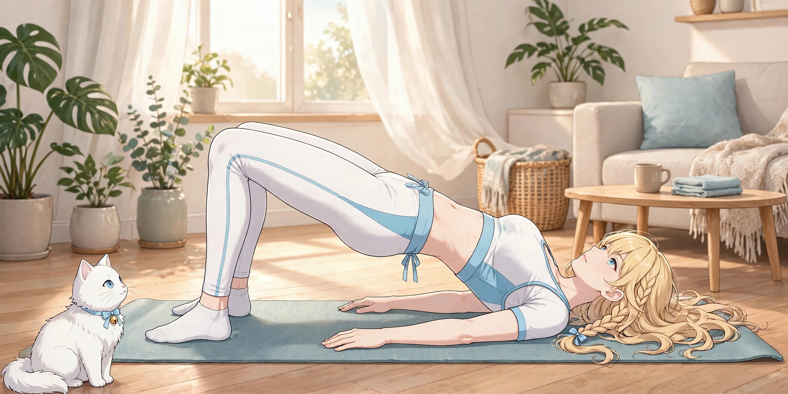
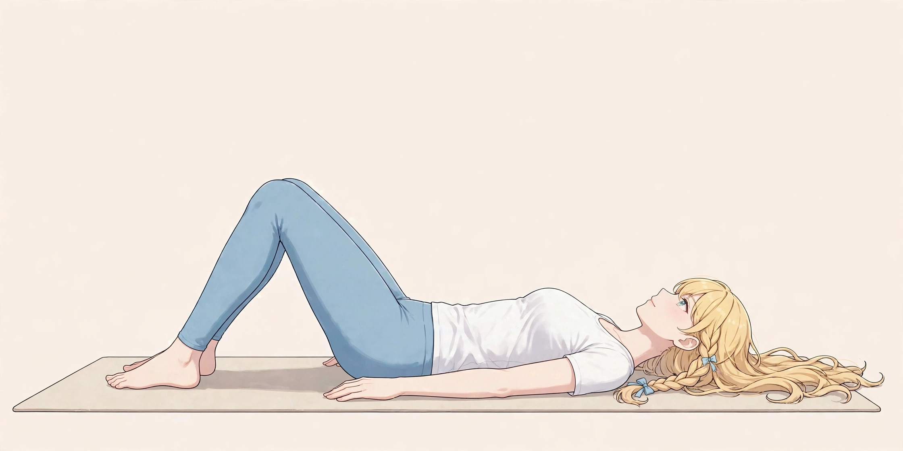
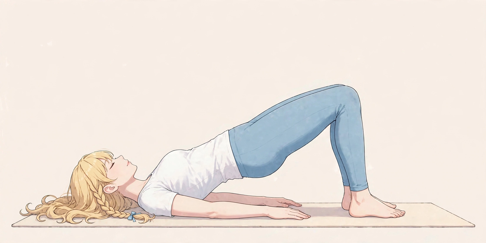

ヒップリフトでお尻のライン（女性）

やり方1：仰向けで膝を立てる（準備の姿勢）
- 仰向けになり、両膝を立てて足裏を床につけます。かかとはお尻から30cmほど離すのが目安です
- 両腕は体の横へ置き、手のひらを床につけます（図1）
- あごを軽く引き、腰の後ろのすき間が大きすぎないか確認します。腰が反っていると感じたら、膝を少しお尻へ近づけてください

やり方2：お尻を持ち上げる（10回×2セット）
- 息を吐きながら、お尻をゆっくり持ち上げます。膝から肩までが一直線になる位置で3秒保ちます（図2）
- 腰を反らせすぎないこと。お腹に軽く力を入れたまま、背中は丸めないようにします
- 息を吸いながら、ゆっくりお尻を下ろします。床につく直前で止めて、また持ち上げる形でも大丈夫です
- 10回を1セットとして、休憩をはさんで2セット行います

服の見え方との関係
お尻まわりが重だるいと、座り姿勢が崩れてボトムスやデニムの見え方にも響きます。ヒップリフトでお尻まわりを動かしておくと、デニムのヒップラインやワンピースの後ろ姿がすっきり見えやすくなります。服側の選び方はヒップ・太ももが気になる人のボトムスの選び方とデニムで脚を長く見せる選び方にまとめています。座りっぱなしの日のボトムスは座りっぱなしの日も楽なワイドパンツの選び方もあわせてどうぞ。
効かせるコツと呼吸
お尻を持ち上げるときは息を吐き、下ろすときに吸うのが基本です。反動で一気に持ち上げず、3秒かけて持ち上げるイメージで行ってください。持ち上げた位置で、お尻に力が入っているのを感じられるか確認します。お尻ではなく腰や太ももの前側に力が入っていると感じたら、かかとの位置を少しお尻へ近づけてみてください。かかとが遠すぎると、太ももの裏側ばかりに力が入ります。
もう1つのコツは、膝が内側へ倒れないようにすることです。持ち上げるときに膝が内側へ寄ると、お尻まわりより膝に負担がかかります。膝はつま先と同じ方向へ向ける意識で、両膝のあいだにこぶし1個分のすき間を保つイメージで行ってください。膝が開きすぎても、お尻に力が入りにくくなります。鏡で横から見ると、膝から肩までのラインが一直線になっているか確認できます。
回数の増やし方（4週間の目安）
- 1週目：10回×1セット、週3回
- 2週目：10回×2セット、週3回
- 3週目：保つ時間を3秒から5秒に伸ばす
- 4週目：15回×2セットまで増やす（無理のない範囲で）
お尻まわりが筋肉痛のように張る日は休んでください。痛みではなく「使った感じ」程度なら、回数を減らして軽く行う形でも大丈夫です。腰に痛みが出たら、その日は中止して、腰の反りを確認してください。
朝と夜の使い分け
朝は、起きがけの体が固い時間帯です。回数を少なめにして、ゆっくりと行ってください。夜は、1日の座り仕事のあとに、深い呼吸と一緒にゆっくり行うのが向いています。就寝前に行うと、そのまま眠りに入りやすくなります。どちらも、痛みがあるときは行わないでください。お風呂上がりの体が温まった時間帯も、動きやすいのでおすすめです。
この記事のテーマに合う用品


あわせて読みたい：トレーニング用品一覧／ぽっこりお腹対策のドローイン／夕方の脚のむくみケア
NEXT — 次に読む背中合わせの姿勢チェックと深呼吸｜ペアストレッチ入門